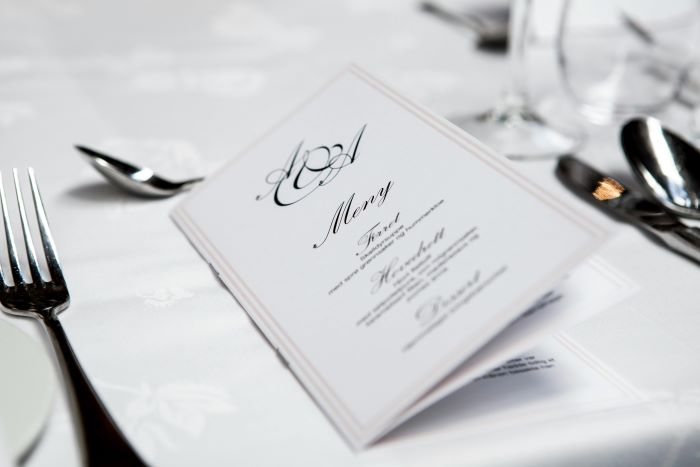
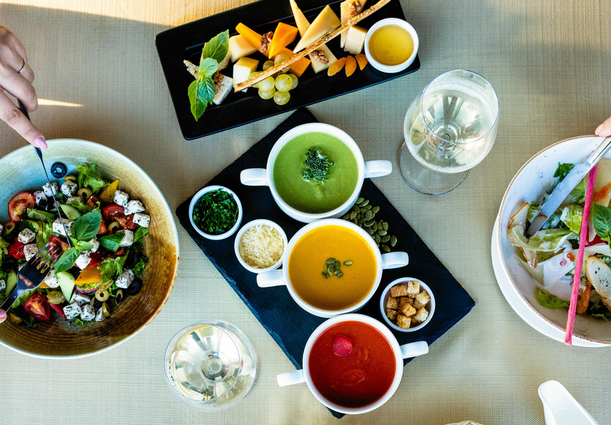
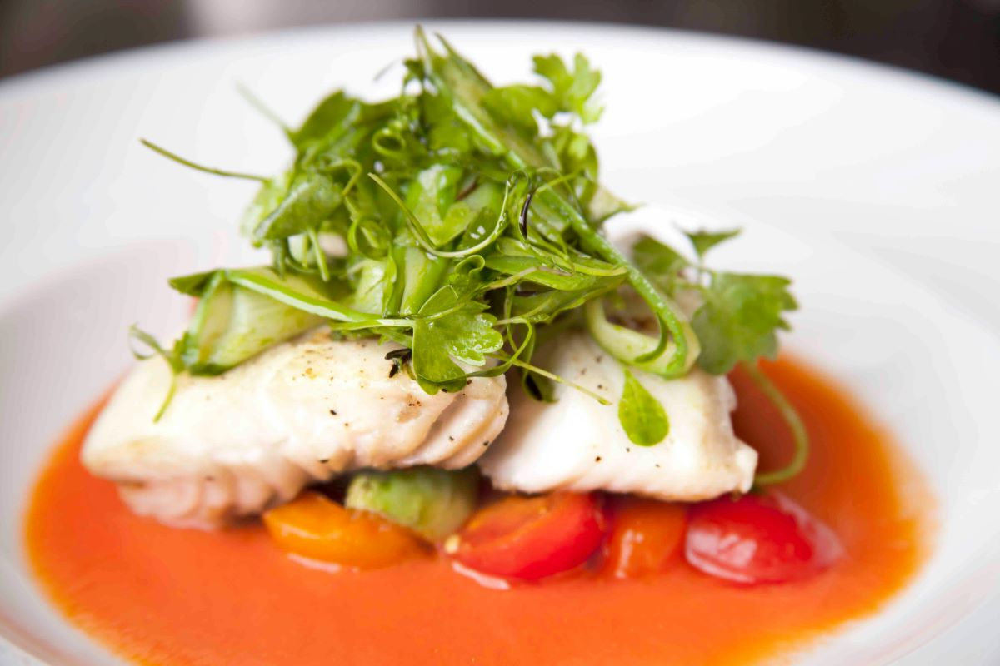
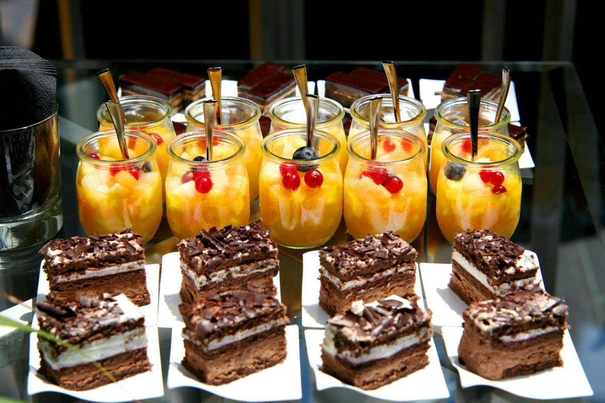

Simphony menu offerings
Appetizers
- Foie Gras Terrine: Seared foie gras served with fig compote and toasted brioche.
- Oysters Rockefeller: Fresh oysters topped with spinach, Pernod cream, and crispy bacon.
- Tuna Tartare: Diced sushi-grade tuna mixed with avocado, soy-ginger dressing, and crispy wontons.
- Truffle Risotto: Creamy Arborio rice infused with black truffle essence and finished with shaved Parmigiano-Reggiano.
 Back to Top
Back to Top
Soups and Salads
- Lobster Bisque: Rich and creamy lobster soup garnished with lobster medallions and chervil.
- Arugula Salad: Baby arugula with shaved fennel, blood orange segments, toasted almonds, and citrus vinaigrette.
- Wild Mushroom Consommé: Clear broth infused with the essence of assorted wild mushrooms, served with a truffle foam.
- Endive and Roquefort Salad: Belgian endive, candied walnuts, Roquefort cheese, and champagne vinaigrette.

Back to Top
Main Courses
- Pan-Seared Chilean Sea Bass: Chilean sea bass served atop saffron risotto with roasted cherry tomatoes and lemon beurre blanc.
- Grilled Rack of Lamb: Herb-crusted rack of lamb served with potato gratin, haricot verts, and rosemary jus.
- Duck Breast Orange: Pan-seared duck breast with Grand Marnier orange glaze, accompanied by wild rice pilaf and braised baby carrots.
- Veal Saltimbocca: Veal scaloppini layered with prosciutto, sage, and fontina cheese, served with marsala reduction and sautéed spinach.
- Vegetarian Wellington: Portobello mushrooms, spinach, and butternut squash wrapped in puff pastry, served with red wine reduction and roasted vegetables.
- Black Truffle Tagliatelle:Fresh tagliatelle pasta tossed in a black truffle cream sauce, garnished with Parmigiano-Reggiano and truffle oil.
- Linguine Frutti di Mare: Linguine pasta with mixed seafood in a white wine garlic sauce, garnished with fresh herbs.

Back to Top
Desserts, Petits Fours and Digestifs
- Crème Brûlée Trio: Trio of classic vanilla bean, lavender-infused, and chocolate hazelnut crème brûlée.
- Chocolate Decadence: Flourless chocolate cake served with raspberry coulis and Chantilly cream.
- Grand Marnier Soufflé: Fluffy soufflé infused with Grand Marnier liqueur, served with crème anglaise.
- Assorted Petits Fours: Miniature pastries, chocolates, and macarons served with coffee or tea.
- Port Wine Flight: Selection of aged port wines served with cheese and fruit.
- Cognac and Armagnac:Premium selection of cognac and armagnac for sipping and savoring.

Back to Top